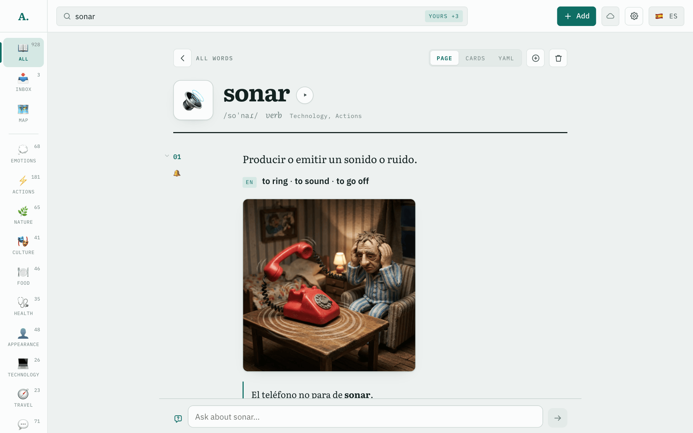

One picture for each meaning


01
to ring, to go off
claymation
02
to ring a bell
manga panel
03
to sound, to seem
retro-futurism
From the same wordsRecordings, clips of native speech, audio loops, illustrated stories and a map of meanings. Readable offline on a phone, a tablet and a desktop.